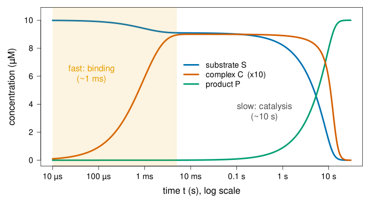
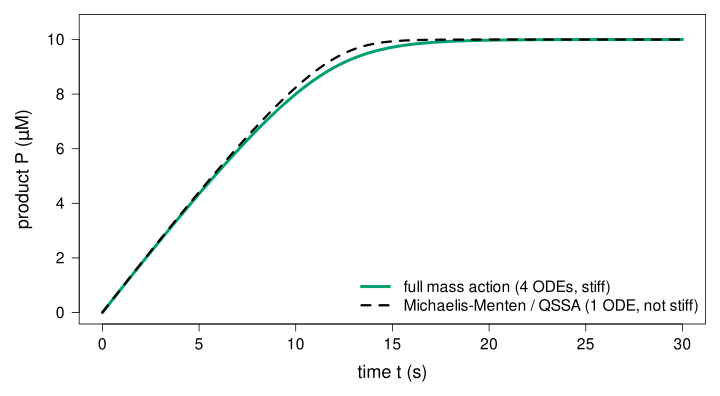
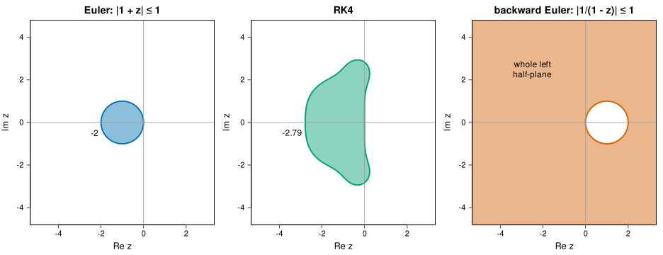
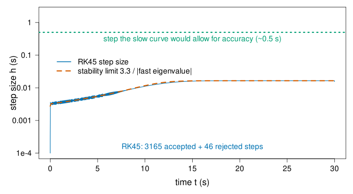
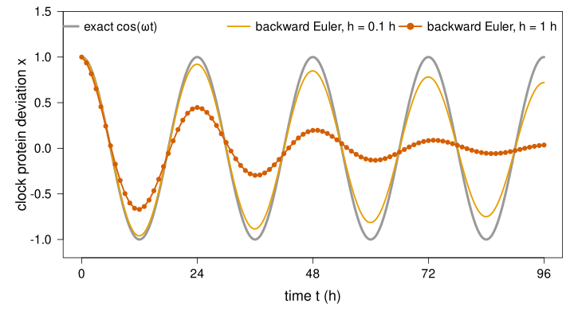

Some models mix a reaction that is over in a millisecond with one that takes minutes. The fast part is finished almost at once, yet an explicit solver keeps taking millisecond steps to the very end. Such a model is called stiff.
The test equationy' = \lambda y and the stability region of a method: which step sizes h keep errors from growing.
Stiff = widely separated time scales. The step size of an explicit solver is set by stability, not by accuracy; even adaptive RK45 takes thousands of steps.
Implicit methods (backward Euler, BDF, Radau) are stable for any step on decaying problems. The price: a Newton solve in every step.
Library solvers: lsoda switches automatically between a non-stiff and a stiff method.
Biology: enzyme kinetics with fast binding and slow catalysis (and its Michaelis–Menten shortcut), and Robertson’s chemical kinetics problem, the classic stiff test case.
A biology problem first
One enzyme, one substrate, mass action: E + S \rightleftharpoons C \to E + P.
library(deSolve)p <-c(kf =100, kr =100, kcat =1) # per uM per s, per s, per sy0 <-c(S =10, E =1, C =0, P =0) # uMtimes <-seq(0, 30, by =0.5) # sfor (m inc("ode45", "lsoda")) { tm <-system.time(out <-ode(y0, times, enzyme, p, method = m))cat(m, ": steps", attr(out, "istate")[2], " time", tm[["elapsed"]], "s\n")}# ode45 : steps 3585 time 0.288 s# lsoda : steps 216 time 0.007 s
Same model, same default tolerances, same answer: 17 times more steps and 40 times the time for the Runge–Kutta solver.
The solution is a smooth curve over 30 s. Why does RK45 need 3585 steps for it?
Fast binding, slow catalysis
enzyme <-function(t, y, p) {with(as.list(c(y, p)), { bind <- kf * E * S - kr * C # E + S <-> C turn <- kcat * C # C -> E + Plist(c(S =-bind, E =-bind + turn,C = bind - turn, P = turn)) })}
k_f = 100\ \mu\text{M}^{-1}\text{s}^{-1} (10^8 per M per s, close to diffusion-limited binding).
Binding settles in about 1 ms; the substrate is used up in about 10 s.

The shortcut: Michaelis–Menten
Assume C is always in balance with S (quasi-steady state, QSSA: C' \approx 0). Then S' = -\frac{V_{\max} S}{K_m + S},V_{\max} = k_{cat} E_0 = 1\ \mu\text{M/s}, K_m = \frac{k_r + k_{cat}}{k_f} = 1.01\ \mu\text{M}.
One ODE, no fast time scale: ode45 needs 61 steps (one per output interval).
But it is an approximation: P(10\text{ s}) = 8.24 vs 8.00 in the full model (3 %). Good when E_0 \ll S_0 + K_m.

Recap: Euler’s stability limit
From Initial value problems and Euler’s method: drug clearance C' = -0.8\,C.
C_{n+1} = C_n + h(-0.8\,C_n) = (1 - 0.8h)\,C_n
h (hours)
0.5
2
3
factor 1 - 0.8h
0.6
−0.6
−1.4
behaviour
decays
oscillates, decays
blows up
Errors shrink only if |1 - 0.8h| < 1, that is h < 2/0.8 = 2.5 hours.
A rate 1000 times faster would need steps 1000 times smaller, even after that component has decayed to nothing.
The test equation y' = \lambda y
Every method, applied to y' = \lambda y with step h, multiplies by a fixed factor R(z) per step, where z = h\lambda:
method
one step
R(z)
Euler
y_{n+1} = y_n + h\lambda y_n
1 + z
RK4
(four stages)
1 + z + \frac{z^2}{2} + \frac{z^3}{6} + \frac{z^4}{24}
Stable if |R(z)| \le 1: errors do not grow. The set of such z is the method’s stability region.
Why this tiny equation? Near any state, a system \mathbf y' = \mathbf f(\mathbf y) behaves like \mathbf y' = J\mathbf y, and J splits into modes y' = \lambda y, one per eigenvalue\lambda of the JacobianJ.
Every eigenvalue must satisfy h\lambda \in stability region. \lambda can be complex (oscillation), so the region lives in the complex plane.
Stability regions

On the negative real axis: Euler needs h|\lambda| \le 2, RK4 h|\lambda| \le 2.79. Both regions are bounded.
Backward Euler (next slides) is stable everywhere except inside the white disc: the whole left half-plane.
What “stiff” means
Eigenvalues of the enzyme model’s Jacobian at the start (reduced to S, C using E = 1 - C):
J <-rbind(c(-100, 1100), c(100, -1101)) # d(S', C') / d(S, C) at S = 10, C = 0eigen(J)$values# [1] -1.200917e+03 -8.326972e-02
Two time scales: 1/1201 \approx 0.8 ms (binding) and 1/0.083 \approx 12 s (catalysis). Ratio \approx 14\,000.
Stiff: the fast mode has decayed, yet it still limits an explicit step to h < 2.79/1201 = 2.3 ms (RK4). Covering 30 s takes 13 000 steps.
Accuracy alone would allow steps of tenths of a second: lsoda’s steps reach 0.5 s (the output spacing).
A problem is stiff when the step size of an explicit method is set by stability, not by accuracy.
Try it: the fast eigenvalue sets the step
Adaptive RK45 cannot escape

The error controller keeps pushing h up, gets rejected, pushes again: hrides the stability limit3.3/|\lambda_\text{fast}| (dashed).
Adaptivity does not help: it finds the stability limit by trial and error, not a way past it.
Backward Euler
Use the slope at the end of the step instead of the start:
Stable and positive, but not accurate at this step: order 1, and h|\lambda| = 2.4 is large.
Stability lets us pick hfor accuracy only. On a stiff problem that is the win: the fast mode only needs to stay damped, not resolved.
Implicit = one nonlinear solve per step
For a nonlinear \mathbf f, each step must solve for \mathbf y = \mathbf y_{n+1}: \mathbf G(\mathbf y) = \mathbf y - \mathbf y_n - h\,\mathbf f(\mathbf y) = \mathbf 0
This is a root-finding problem: use Newton, from Newton for systems of equations.
Jacobian of \mathbf G: \;I - hJ, where J is the Jacobian of \mathbf f. Newton: solve (I - hJ)\,\boldsymbol\delta = -\mathbf G(\mathbf y), set \mathbf y \leftarrow \mathbf y + \boldsymbol\delta.
Start from \mathbf y_n: the previous value is close, so 1–4 iterations suffice.
By hand — dimerisation M' = -kM^2, k = 10, M_0 = 1, h = 0.1: solve G(y) = y + h k y^2 - 1 = y + y^2 - 1 = 0, G'(y) = 1 + 2y.
iteration
0
1
2
3
y
1
1 - \frac{1}{3} = 0.6667
0.6667 - \frac{0.1111}{2.333} = 0.6190
0.61803
Backward Euler with Newton in R
beuler <-function(f, jac, y0, h, n, tol =1e-10) { Y <-matrix(NA, n +1, length(y0)); Y[1, ] <- y <- y0 I <-diag(length(y0))for (i in1:n) { yold <- y # Newton starts at y_nfor (k in1:20) { delta <-solve(I - h *jac(y), -(y - yold - h *f(y))) y <- y + deltaif (sqrt(sum(delta^2)) < tol) break } Y[i +1, ] <- y } Y}
f(y) and jac(y) are the enzyme rates and their 4\times4 Jacobian (written out in the exercise).
The inner loop is newton_sys from Newton for systems of equations with \mathbf F = \mathbf G, J_G = I - hJ.
Still one Newton solve per step (Jacobian I - \tfrac23 hJ for BDF2); uses old values instead of extra stages.
BDF1 and BDF2 are A-stable. BDF3–5 lose a sliver near the imaginary axis (fine for decay, less so for weakly damped oscillations). Above order 6 they are unstable.
bdf in deSolve, "BDF" in solve_ivp: orders 1–5, step and order chosen automatically (Gear’s method).
What one implicit step costs
per step
explicit (RK45)
implicit (BDF, Radau)
evaluations of \mathbf f
6
1–4 per Newton iteration
Jacobian J (n \times n)
—
analytic, or n extra \mathbf f calls by finite differences
linear solve
—
LU of I - hJ: \approx \tfrac23 n^3
number of steps (stiff)
huge
small
Solvers reuseJ and its LU over many steps; they refactorise only when Newton slows down.
Large models (gene networks, spatial grids) have sparseJ: banded or sparse LU keeps the cost near O(n).
Non-stiff problem: explicit wins. Use an implicit method only when stiffness makes the explicit one slow.
LSODA: switch automatically
LSODA starts with a non-stiff method (Adams, explicit-style multistep), watches its step sizes, and switches to BDF when it detects stiffness (and back again if it fades).
out <-ode(y0, times, enzyme, p, method ="lsoda")attr(out, "istate")[15] # method of the last step: 1 = Adams, 2 = BDF# [1] 2attr(out, "rstate")[5] # time of the last switch (s)# [1] 0.01679162
Adams through the binding transient (where small steps are needed for accuracy anyway), BDF from 17 ms on.
diagnostics(out) prints all counters: steps, \mathbf f calls, Jacobians, method.
That is why lsoda is the default of deSolve::ode: you do not need to know in advance whether your model is stiff.
Give the Jacobian (jacfunc / jac=) if you have it: fewer \mathbf f calls, more reliable Newton.
Rust’s ode_solvers crate has no stiff solver; its Dopri5 stops with “stiffness detected”. The exercise writes backward Euler with Newton by hand.
Robertson’s problem
Three species, three reactions (Robertson 1966): A \xrightarrow{0.04} B, \quad B + B \xrightarrow{3\times10^7} C + B, \quad B + C \xrightarrow{10^4} A + C
ode45 59284 steps 377479 f-evals 1.202 s y2: 8.887885e-06
lsoda 98 steps 200 f-evals 0.002 s y2: 9.18632e-06
bdf 92 steps 188 f-evals 0.002 s y2: 9.187624e-06
radau 26 steps 269 f-evals 0.002 s y2: 9.185542e-06
600 times more steps for RK45, and its y_2 is 3 % off: 59 000 steps at the edge of stability pile up error (a tighter atol does not cure it).
To t = 10^{11}: lsoda takes 1595 steps. RK45, held at h \approx 10^{-3}, would need about 10^{14}.
When implicit methods mislead

The 24-hour oscillator x'' = -\omega^2 x from Initial value problems and Euler’s method, backward Euler:
|R(i\omega h)| = 1/\sqrt{1 + \omega^2 h^2} < 1: every step shrinks the amplitude.
After 10 days at h = 1 h: amplitude 3.5\times10^{-4} instead of 1. (Euler: 2850.)
A biologist would conclude the clock is damped. The damping is the method’s.
Checks for stiff problems
Count steps (diagnostics, attr(out, "istate"), sol.nfev): thousands of steps for a smooth curve, step size flat at a small value → stiff. Switch to lsoda, bdf or radau.
Eigenvalues of the Jacobian: a ratio of 10^3 or more between the largest and smallest |\text{Re}\,\lambda|, over the time span you simulate → stiff.
Compare two solvers of different type and tighten the tolerances: the answer must not move.
atol below the smallest concentration you care about (y_2 \approx 10^{-5} needs atol\ll 10^{-5}).
Conservation laws (E + C, S + C + P, y_1 + y_2 + y_3) and positivity. A negative y_2 in Robertson makes the true ODE blow up: y_2' \approx -3\times10^7 y_2^2 drives it to -\infty.
Newton failures (“repeated convergence failures”, “step size too small”): often a wrong hand-coded Jacobian, or a model with a real singularity.
Summary
Test equationy' = \lambda y: a method multiplies by R(h\lambda) per step. Stability region: |R| \le 1. Euler h|\lambda| \le 2, RK4 \le 2.79: bounded for every explicit method.
Stiff: fast and slow time scales together; the explicit step is set by stability, not accuracy. Adaptive RK45 rides the stability limit: 3585 steps for the enzyme, 59 284 for Robertson to t = 40.
Backward Eulery_{n+1} = y_n + h f(y_{n+1}): R = 1/(1-z), stable for all decaying modes. Order 1. BDF2–5 for higher order, Radau for implicit RK.
Implicit = a Newton solve per step with Jacobian I - hJ: the cost of a step goes up, the number of steps goes down by orders of magnitude.
LSODA switches between Adams and BDF automatically (default in deSolve::ode; method="LSODA" in solve_ivp, whose default RK45 is non-stiff).
Failure: implicit methods damp oscillations that should persist. Checks: step counts, Jacobian eigenvalues, two solvers, atol, conservation, positivity.
Next:Equilibria, stability and the phase plane: the same Jacobian eigenvalues decide whether a steady state of the model is stable.